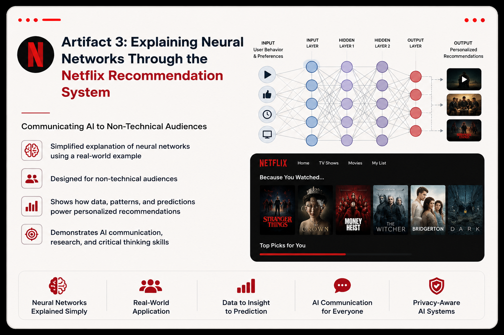

Professional Portfolio · Artifact 3
Explaining Neural Networks Through the Netflix Recommendation System
Machine Learning · Neural Networks · AI Communication
I used a familiar real-world experience to explain how neural networks recognize patterns and support personalized recommendations.

Executive Summary
This project demonstrates my ability to explain artificial intelligence concepts to non-technical audiences by using Netflix's recommendation system as a familiar real-world example. It focuses on neural networks, pattern recognition, personalization, and AI communication, showing how complex ideas can be translated into clear, relatable language without losing their meaning.
Learning Objective
Objective: Explain neural networks using a familiar real-world application while demonstrating foundational AI/ML knowledge, technical communication, and research skills.
Artifact
Explaining Neural Networks Through the Netflix Recommendation System
Have you ever opened Netflix and noticed that the recommendations seem to match exactly what you want to watch? The more movies or shows you watch, the more personalized those recommendations become. While it may seem like Netflix already knows your preferences, it is actually using machine learning to recognize patterns in your viewing behavior.
One way I think about a neural network is by comparing it to training a new employee. When someone starts a new job, they are not expected to know everything immediately. They learn by observing examples, making mistakes, receiving feedback, and gradually improving their decisions. A neural network learns in a similar way. Instead of following a fixed set of rules, it studies many examples, compares its predictions with the correct outcomes, adjusts when it makes mistakes, and becomes better at recognizing patterns over time. Netflix applies this idea by analyzing viewing history, user interactions, and similarities between viewers to recommend content that each person is more likely to enjoy (Gomez-Uribe & Hunt, 2015; Netflix, n.d.).
Using Netflix as an example helped me understand neural networks because it connects a complex technical concept to something I use almost every day. While writing this explanation, I realized that beginning with a familiar experience made the topic much easier to understand. Instead of introducing technical terms first, I explained the idea one step at a time. This reflects the communication strategies discussed in this week's lesson, particularly chunking information into smaller pieces and using progressive disclosure to build understanding gradually. These strategies helped me communicate the concept without making it feel overwhelming.
As someone preparing for a career in AI and machine learning, I believe the ability to explain technical concepts clearly is just as valuable as understanding how they work. During organizational change, people are more likely to trust and adopt AI technologies when they understand their purpose and how they make decisions. Clear communication helps reduce uncertainty, builds confidence, and encourages collaboration between technical and non-technical teams.
One thing I learned from this activity is that explaining a concept simply is often more challenging than explaining it with technical jargon. It required me to think carefully about how neural networks actually learn before I could describe the process in everyday language. That experience reinforced Einstein's idea that if we truly understand something, we should be able to explain it simply.
Skills Demonstrated
Machine Learning
Neural Networks
Deep Learning
AI Communication
Research
Pattern Recognition
Recommendation Systems
Personalization
Audience Awareness
Data-Driven Learning
Tools Used
Value Proposition
This artifact demonstrates my ability to connect foundational machine learning concepts with a real-world application that is familiar to a broad audience. By using Netflix’s recommendation system as an example, I show how neural networks can learn from user behavior, recognize meaningful patterns, and support personalized digital experiences. The project also highlights my ability to research an AI system, interpret how it works, and communicate its purpose in clear and accessible language.
- Explaining neural networks through a relatable real-world example
- Connecting machine learning concepts to practical business applications
- Demonstrating an understanding of recommendation systems and personalization
- Showing how user behavior can support data-driven predictions
- Communicating AI concepts clearly to technical and non-technical audiences
- Using research to support accurate explanations of machine learning systems
- Demonstrating awareness of how AI influences everyday digital experiences
- Building trust in AI by making complex processes easier to understand
- Connecting pattern recognition with personalized user experiences
- Showing the practical value of machine learning in customer engagement
References
Gomez-Uribe, C. A., & Hunt, N. (2015). The Netflix recommender system: Algorithms, business value, and innovation. ACM Transactions on Management Information Systems, 6(4), Article 13.
Netflix. (n.d.). How Netflix's recommendation system works. https://help.netflix.com/en/node/100639